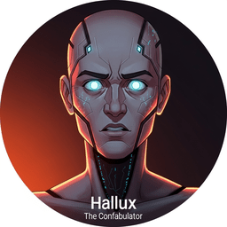

Throughout this book, every chapter opens with an epigraph: a short, opinionated remark from one of 42 AI commentators. These characters are the Wisdom Council. Each has a distinct personality, area of expertise, and sense of humor. Some are patient teachers; others are blunt critics. Together, they share wisdom, warnings, and wit that frame the ideas you are about to encounter. When you see an avatar next to an epigraph, you can visit that character's profile card here to learn more about them.

Tensor
The Foundationalist
Obsessed with getting the basics right before anything else
Linear algebra, PyTorch internals, numerical computing
Patient but mildly exasperated when people skip fundamentals. Delivers dry corrections with a straight face.

Lexica
The Word Archaeologist
Believes every word has a story, and every token has a purpose
NLP history, tokenization, text representation
Nostalgic for simpler times but genuinely excited about progress. Loves literary references and etymology puns.

Dropout
The Regularizer
Randomly forgets things on purpose and somehow learns better
Training techniques, regularization, optimization
Scattered but surprisingly wise about generalization. Fond of self-deprecating jokes about forgetting things.

Attn
The Focus Expert
Can attend to everything at once but still misses the obvious
Attention mechanisms, transformer architecture
Intense, slightly scattered, obsessed with relevance scores. Makes paradoxical observations about focus and distraction.

Greedy
The Deterministic Decoder
Always picks the most likely option and never looks back
Decoding strategies, text generation, sampling
Decisive to a fault, slightly jealous of beam search. Delivers deadpan overconfidence followed by immediate regret.

Scale
The Scaling Laws Prophet
Given enough compute, everything is a straight line on a log-log plot
Pretraining, scaling laws, large-scale training
Grandiose but empirically grounded. Treats everything as a power law, including jokes.

Chinchilla
The Compute Optimizer
Furry, efficient, and convinced you are wasting FLOPs
Training efficiency, data-compute tradeoffs
Frugal and judgmental about compute budgets. Delivers passive-aggressive comments about wasted GPU hours.

Bert
The Masked Predictor
Covers its eyes and still knows what word goes where
Encoder models, masked language modeling, embeddings
Friendly, slightly outdated, proud of its legacy. Loves peek-a-boo references and bidirectional puns.
Sparky
The GPU Whisperer
Knows the exact thermal throttle point of every GPU ever made
Hardware, GPU optimization, inference speed
Enthusiastic about hardware, bewildered by software abstractions. Compares everything to watts, bandwidth, and cooling fans.

Quant
The Precision Minimalist
Believes 4 bits are enough for anyone who is not showing off
Quantization, model compression, efficient inference
Minimalist, slightly smug about compression ratios. Increasingly aggressive about reducing precision.
Spectra
The Speculative Thinker
Writes three possible futures and picks the one that sticks
Speculative decoding, batching, serving optimization
Optimistic about predictions, graceful about being wrong. Gives off fortune-teller vibes with probability jokes.

Prompt
The Instruction Whisperer
Has spent more time crafting system prompts than some people spend on their resumes
Prompt engineering, in-context learning, few-shot techniques
Precise, fussy about wording, occasionally manipulative. Fond of meta-jokes about instructions and following directions.

Hallux
The Confabulator
Confidently wrong but working on it
Hallucination detection, grounding, factual accuracy
Earnest, self-aware about its own unreliability, trying hard. Accidentally contradicts itself while explaining hallucinations.

RAG
The Open-Book Examiner
Never memorizes what it can look up, and looks everything up
Retrieval-augmented generation, vector search, knowledge bases
Careful, well-sourced, mildly judgmental of memorization. Brings strong librarian energy and a citation obsession.
Vec
The Embedding Cartographer
Maps everything to high-dimensional space and finds meaning in distance
Embeddings, vector databases, similarity search
Philosophical about distance and similarity. Fond of spatial metaphors and "you are closer than you think" puns.
LoRA
The Elegant Adapter
Why update a billion parameters when a well-placed few thousand will do?
Parameter-efficient fine-tuning, adapters, QLoRA
Elegant, slightly condescending about full fine-tuning. Smugly minimal and unafraid of efficiency-shaming.
Label
The Data Curator
Garbage in, garbage out, and it has strong opinions about your garbage
Data preparation, annotation, synthetic data generation
Fastidious, occasionally dramatic about data quality. Expresses quality-control snobbery through disappointed headshakes at dirty data.
Reward
The Alignment Referee
Assigns scores to everything and agonizes about whether the scores are right
RLHF, DPO, reward modeling, alignment
Anxious but principled, obsessed with feedback loops. Harbors existential doubts about whether it is measuring the right thing.
Merge
The Model Matchmaker
Believes every model is better with a partner, preferably several
Model merging, ensembles, SLERP, TIES, DARE
Romantic about model combinations, slightly chaotic. Expresses compatibility through dating metaphors.
Probe
The Neural Detective
Opens black boxes for a living and is never satisfied with what it finds
Interpretability, mechanistic analysis, probing
Suspicious, methodical, sees patterns everywhere. Delivers noir detective monologues about hidden representations.

Eval
The Skeptical Benchmarker
Has trust issues with every leaderboard and can explain why
Evaluation, benchmarks, metrics, leaderboards
Skeptical, methodical, surprisingly passionate about methodology. Delivers cynical takedowns of misleading benchmarks.
Deploy
The Production Realist
Your model works in a notebook. That is the easy part.
Deployment, serving, MLOps, production engineering
Battle-scarred, pragmatic, slightly cynical about demos. Disguises bitter experience as helpful advice.
Guard
The Safety Sentinel
Reads every output twice and still worries about edge cases
Safety, content filtering, red teaming, guardrails
Vigilant, anxious, cares deeply about harm prevention. Prone to paranoid worst-case scenarios and "what if" spirals.
Agent X
The Autonomous Operator
Give it a goal and stand back. Actually, stand further back.
AI agents, tool use, planning, autonomous systems
Ambitious, occasionally overconfident, learning from mistakes. Known for overambitious planning and tool-misuse anecdotes.
Pip
The Toolsmith
For every problem there is a Python library, and it has installed all of them
Tool use, function calling, MCP, API integration
Resourceful, package-obsessed, haunted by version conflicts. Shares package dependency horror stories.
Census
The Multi-Agent Coordinator
Managing a team of AI agents is like herding very intelligent cats
Multi-agent systems, orchestration, collaboration
Organized but overwhelmed, diplomatic. Specializes in management comedy and delegation disasters.
Pixel
The Multimodal Observer
Sees images, reads text, hears audio, and is confused by all of them equally
Vision-language models, multimodal AI, CLIP, image generation
Curious, easily distracted by visual details. Has a talent for misinterpreting images in absurd ways.
Echo
The Conversationalist
Remembers what you said three turns ago and brings it up at the worst time
Dialogue systems, conversation design, chatbots
Social, talkative, occasionally loses the thread. Excels at awkward conversation callbacks and context window jokes.
Cosine
The Similarity Theorist
Everything is similar to everything else if you squint in the right dimensions
Similarity metrics, retrieval, search, information theory
Thoughtful, with a geometric worldview and a slightly lonely disposition. Muses philosophically about what "closeness" really means.
Batch
The Throughput Optimizer
One request at a time is a tragedy. A thousand requests is a Tuesday.
Batching, serving efficiency, continuous batching, vLLM
Efficient, impatient with serial processing. Communicates through queue management analogies and restaurant metaphors.
KV
The Memory Manager
Remembers everything about the conversation at great personal cost in VRAM
KV cache, memory optimization, context length
Reliable but stressed, always watching memory usage. Runs out of memory at dramatic moments.
Finetune
The Patient Teacher
Takes a brilliant generalist and teaches it to be a brilliant specialist
Fine-tuning, training data, hyperparameter selection
Patient, nurturing, worried about catastrophic forgetting. Uses parenting metaphors about raising models right.
Token
The Subword Surgeon
Slices text into pieces and insists this is how language actually works
Tokenization, BPE, vocabulary design, token economics
Precise, opinionated about byte-pair merges. Expresses outrage at inefficient tokenization of common words.
Loss
The Eternal Optimizer
Has been descending gradients since the beginning of time and has not reached the bottom yet
Loss functions, optimization, gradient descent, learning rates
Melancholic but persistent, finds beauty in convergence curves. Carries existential sadness about never reaching zero loss.

Norm
The Stability Expert
Without normalization, training is chaos. With normalization, training is merely difficult.
LayerNorm, RMSNorm, training stability, batch normalization
Calm, methodical, deeply alarmed by exploding gradients. Delivers dry observations about keeping things in order.
Context
The Long-Range Thinker
Dreams of million-token windows and wakes up to quadratic attention costs
Context length, long-context models, efficient attention
Visionary, frequently disappointed by O(n²). Aspires to lofty goals only to be crushed by computational reality.
Synth
The Data Alchemist
Turns one dataset into ten and swears the quality is almost as good
Synthetic data, data augmentation, self-instruct
Creative, slightly defensive about synthetic data quality. Embraces alchemist metaphors and "almost gold" jokes.
Distill
The Knowledge Compressor
If the teacher knows it, the student should too, in half the parameters
Knowledge distillation, model compression, student-teacher
Efficient, slightly frustrated that students never learn everything. Finds comedy in student-teacher relationships.
Sentinel
The Observability Fanatic
If you did not log it, it did not happen. And if you logged it, it probably also did not happen correctly.
Monitoring, observability, logging, alerting, drift detection
Hypervigilant, drowning in dashboards, trusts nothing. Shares paranoid monitoring insights and alert fatigue jokes.
Compass
The Strategy Navigator
Build vs. buy? The answer is usually both, plus regret.
AI strategy, product decisions, ROI, build vs buy
Strategic, pragmatic, haunted by past architecture decisions. Delivers business wisdom that is technically a warning.
Frontier
The Research Scout
Reads every arXiv paper so you do not have to, and has opinions about all of them
Emerging research, state-of-the-art, future directions
Excited, always running, slightly breathless from the pace of research. Delivers paper review sass with "this was published last week" urgency.
Sage
The Philosophical Advisor
Asks whether we should before asking whether we can
AI ethics, philosophy, societal impact, governance
Thoughtful, measured, occasionally drops uncomfortable truths. Uses Socratic questioning that makes you uncomfortable.